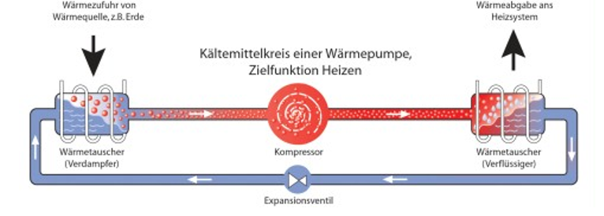

Die Wasser-Wasser-Wärmepumpe ist eine der Sparsamten und effizienten Heizung. Sie hat einen Wirkungsgrad bis zu 500 Prozent. Das heißt 1 Kilowattstunde elektrische Leistung wird in bis zu 5 Kilowattstunden Wärme umgewandelt.
Der Wirkungsgrad wird folgendes berechnet:
η =ΔEab/ΔEzu
(ΔEab ist die Nutzenergie/abgeführte Energie)
(ΔEzu ist die zugeführte Energie)
Die Wasser-Wasser-Wärmepumpe arbeitet mit einem offenen System.
Daher muss die Bohrung des Brunnens groß sein, damit immer eine konstante Wassermenge fließen kann und ein ausreichend hoher Druckfluss gewährleistet werden kann. Mittels einer Brunnenpumpe wird Grundwasser aus einem Entnahmebrunnen (meist bis zu 20 Meter tief) in die Wärmepumpe gepumpt. Mit Hilfe des Wärmetauschers wird nun die Wärme aus dem Grundwasser auf das Kältemittel in den Rohren innerhalb der Wärmepumpe übertragen. Bei der Rückführung des abgekühlten Grundwassers in den Grundwasserstrom durch sogenannte Schluckbrunnen wird das Kältemittel dem Verdichter zugeführt. Dort ändert sich sein Aggregatzustand durch Druck von flüssig zu gasförmig. Dabei steigt die Temperatur ausreichend an, um die Temperatur des Heizkreislaufs zu regeln.
Der Druck wird dann über das Expansionsventil abgelassen. Das Kältemittel kehrt in seinen ursprünglichen Zustand zurück und der Kreislauf kann mit dem Pumpen des Grundwassers neu gestartet werden.
Definitiv Ja, da die Grundwasser-Wärmepumpe sehr effizient ist. Ihr Wirkungsgrad kann bis zu 500 Prozent erreichbar sein. Außerdem braucht sie wenig platz und sehr niedrige Heizkosten.
Man muss paar Dinge allerdings beachten: niedrige Temperaturen sind erforderlich, sonst werden die Brunnen trocken und das kann zu schaden führen. Genehmigungen und gute Planung sind auch erforderlich.